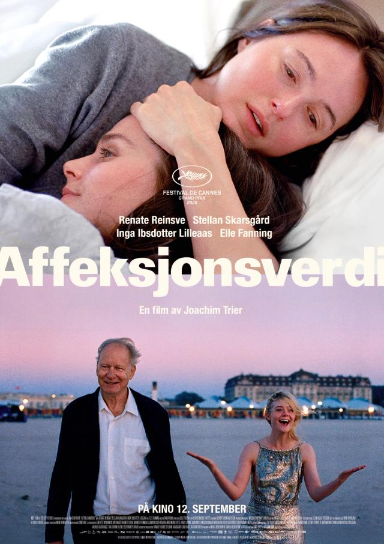
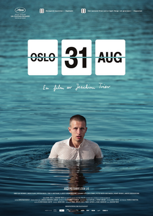
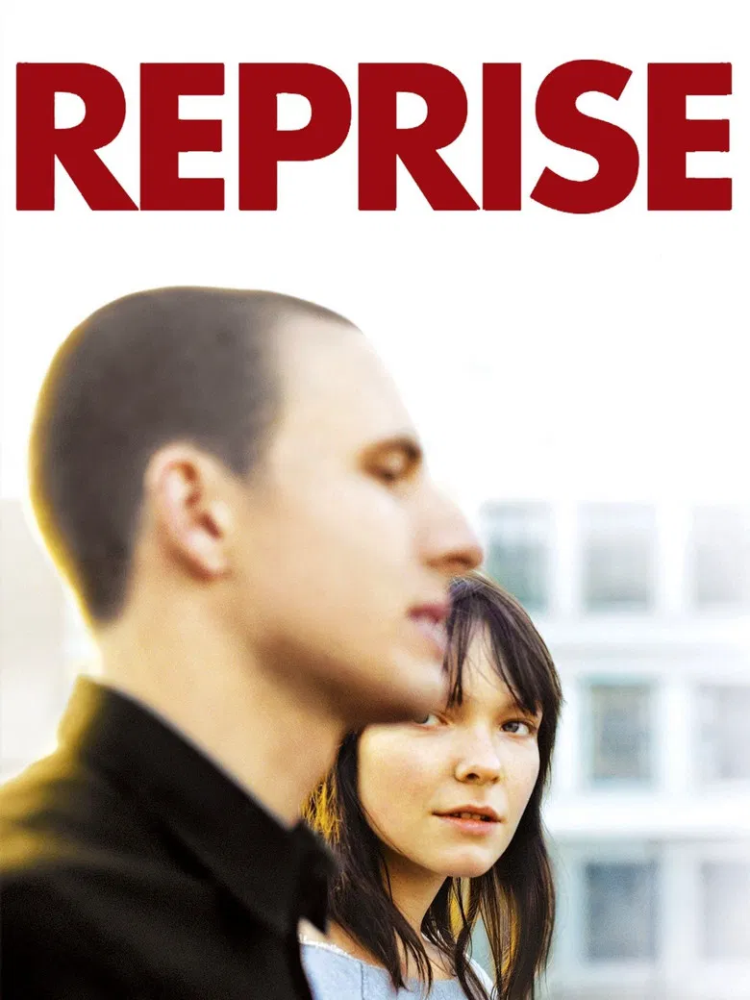

Joachim Trier
Filmer
Affeksjonsverdi
2025

Oslo 31. august
2011

Reprise
2006

Bakgrunn
Joachim Trier er en av Norges mest anerkjente filmregissører og manusforfattere, kjent for filmer som ofte utforsker identitet, relasjoner og det moderne bylivet - særlig i Oslo.
🎬 Bakgrunn
Født: 1. mars 1974 i Copenhagen
Oppvokst i Oslo
Kommer fra en filmfamilie – både faren og bestefaren jobbet i filmbransjen.
Startet som skateboarder og lagde tidlig pornofilmer/skatevideoer før han gikk over til film.
Han studerte film ved den prestisjetunge National Film and Television School i Storbritannia, hvor han
utviklet sin stil.